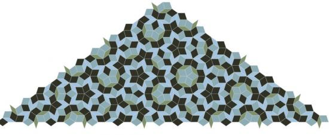

Posted by Zach on Mar 21, 2008
Awesome!!
Posted by Leandro on Nov 29, 2008
Great, thank you! it's beautiful!
Posted by George on Oct 20, 2009
what is intended by the five "function calls" in lines 2 through 6?
Posted by Mark M on Oct 23, 2009
George, those are just basic nodebox functions to set up the state before it starts drawing. They are all described really well in the reference pages. The transform call is the only one that is critical because as the we rotate the tiles they need the corner transform or they'll all end up on top of each other. The others just move the canvas so the art is centered, set the stroke color and width so the tiles are outlined, etc.

Penrose Tiling
Posted by Mark M on Feb 23, 2008
This is a short script to generate the non-periodic penrose tiling. As mentioned under the L-system posting a while back this can be produced by means of a well-known l-system recipe. The L-system works beautifully but it is very difficult to see how it works. This script uses a contraction method of starting with one half of one of the tiles and recursively breaking it down into smaller units. One of the goals was to show the intense relationship between the tiling and the golden ratio and also to see if it could be done using nothing except Nodebox's transformations. Enjoy: